Pattern recognition is the automated recognition of patterns and regularities in data. One of the approaches to pattern recognition is machine learning.
Machine learning is a scientific study of algorithms that perform specific task without explicit instructions.
We divide machine learning into supervised and unsupervised learning.
Supervised learning is a task in which we learn a mapping function from input to output based on a set of example input-output pairs.
Unsupervised learning discovers patterns in data without a given example output.
In this course we will forcus on supervised learning. The two most prominent problems which we will study are regression and classification.
Regression is a task to predict continous value based on input. Classfication on the other hand is a task to assign each input to an element of a discrete set.
It's a way of solving a regression task task where we explicitly assume that output can be estimated as simple linear function of the input. The objective is to find that function.
A good example is a task to estimate the price of the house given it's size.
Training set is the set
Mapping function is a function
Inference is the step of computing
We've assumed that
Formally the goal of linear regression is to find
Cost function (aka. distance function) the function that measures how much the prediction differs from the ground truth. By far the most popular cost function is Mean squared error - MSE defined as
We try to define our cost functions to be convex, because then it's easy to find a global minimum (which has to exist if the function is strictly convex).
Learning Algorithm is a way of finding the parameters that minimize the cost function.
The most widely used learning algorithm is Gradient Descent. It's high level strategy is as follows:
The basic idea is that the derivative points into the direction of bigger values of cost function. So if we w ill step in the opposit direction we will (hopefully) arrive at a lower value of cost function. The learning rate determines the size of the step.
Plotting the cost function is a good way to check the sanity of your hyper-parameters (for example learning rate)
Picking learning rate is sometimes tricky. Undershooting occurs when the learning rate is to small. It can cause the gradient descent to have very small updates and never reach optimum:

Overshooting is when the learning rate is too big. The gradient descent might never converge:

Apart from that gradient descent has some other problems. There are some extensions to tackle them - most notably Batch Gradient Descent. Instead of computing the update for each of the elements in the training set independently it computes the update for whole dataset. Batch gradient descent is computationally more expensive but ensures we generalize well.
What happens when the input is a vector not a scalar?
Let's assume
Now
Surprisingly the gradient descent still works(!). Just pick starting params and keep subtracting
There is one big problem with gradient descent in multidimensional feature space - if the features have different order of magnitude and one wants to use a single learning rate for all the features then there are big differences in the partial derivatives with respect to different features (aka. gradient has elements with different order of magnitude as well). Thus to big
To tackle the problem we normalize the features i.e. make their orders of magnitude the same.
The easiest way to normalize a set is to divide by the element with the biggest absolute value. This approach is not robust against outliers - if we have 10 inputs in range
The most common normalization is the mean normalization:
Mean normalized features are not in some predefined range but are roughly in the same scale. We have to keep the variance and mean to apply same normalisation to input for inference.
What if we our mapping can't be estimated by a linear function? Well here polynomial regression comes into place.
The basic idea is that we can simply make another
We can further complicate this to include some products for instance
We will start with the easiest case - binary classification. It's a task to label the inputs with two classes.
The easiest approach named logistic regression is to perform regression and then do thresholding - if the predicted value is above some level label the input with class
To make our life easier with thresholding we use a sigmoid function. Sigmoid function is defined as
We can thus always pick
We may also interpret
The decision boundary is a set of all points where the probabilities of x belonging to two different classes are equal.
In many cases there is no good linear solution (decision boundary is not a linear function).
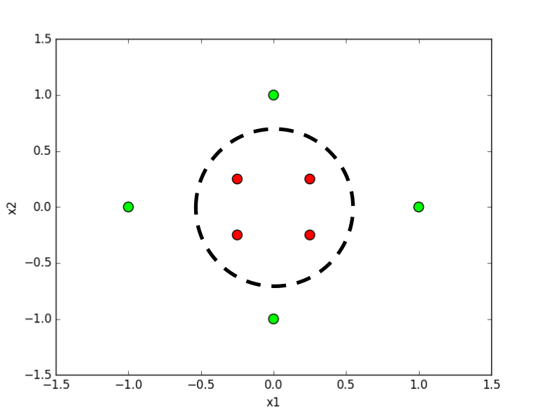
In these cases we have to complicate the solution a bit. We want some kind of a shape for the decision boundary. The approach we use is similar to polynomial regression. We compute another discriminative features. How we do that?
We can just come up with various functions and look whether we can separate the classes using thresholding on those values. For instance we can compute
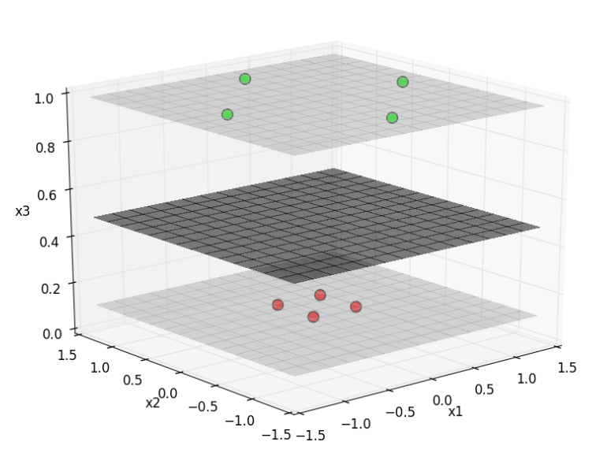
MSE doesn't perform well in logistic regression - it's not a simple convex function:
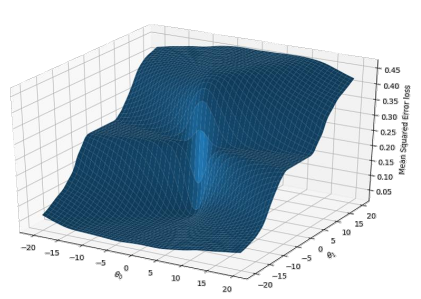
This strange outcome is due to the fact that in logistic regression we have the sigmoid function around, which is non-linear (i.e. not a line). source
It may have some plateaus which extremely slows down gradient descent or even local minima that cause the algorithm to never reach the global minimum.
And so we define a new cost function that plays a lot better with gradient descent in logistic regression:
(Notice that cases are pain when implementing so we can define the same function as
Ok, but why this function? Let's look at the graphs for two cases:
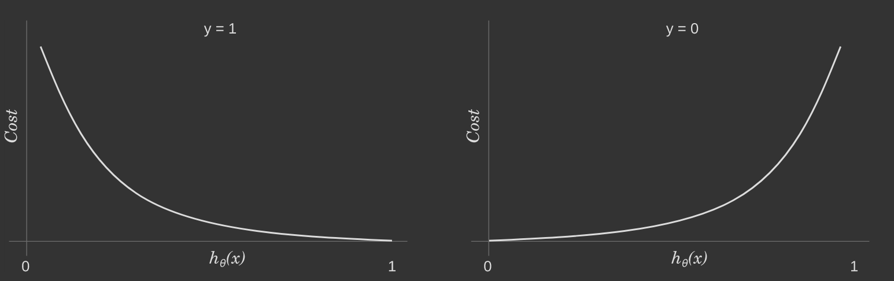
It's clear that this function puts a hefty cost for being very sure and wrong at the same time - and that is a desired property in our case.
The easiest way to solve multiclass classification is to do one vs rest classification. In short lets split the problem to many problems of binary classification.
Let's have labels
One way to see it is that we draw three decision boundaries.
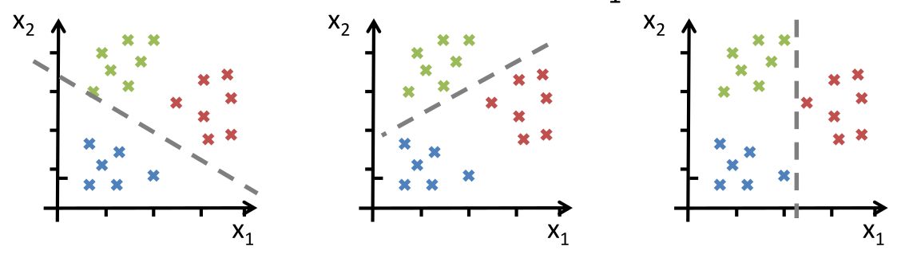
It's a nice intuition of what fully connected layers do in classification neural network. The first layer computes many possible lines between data points and the following layers combine the results.
Let's look differently on linear regression. Let's introduce
It's usefull to look at the data in a generative way. The data (aka. training set) comes from some complex process and is slightly corrupted by noise. We usually assume that the noise is Gaussian. What ML is trying to do is to model the process.
We say that with different training sets drawn from the same underlying process we have different instaces of the same problem.
For the purpose of this chapter we think of the process as a black box, where we can put our input and get noisy output.
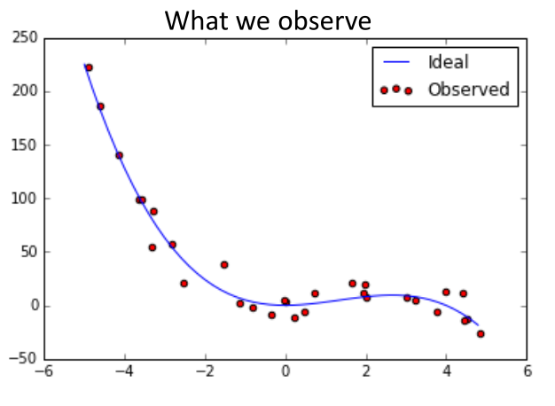 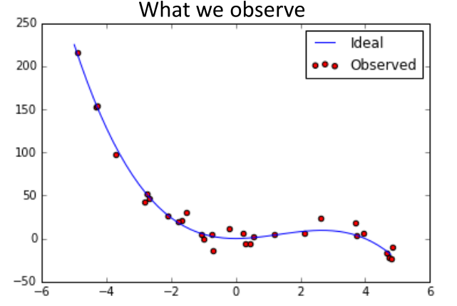
We don't know how complex the process is. Underfitting happens when we try to model a complex process with a simple model.
To make it easier to explain we will assume a 1D feature space. Let's define feature extraction function
Now let's try to fit some complex model with features extracted by
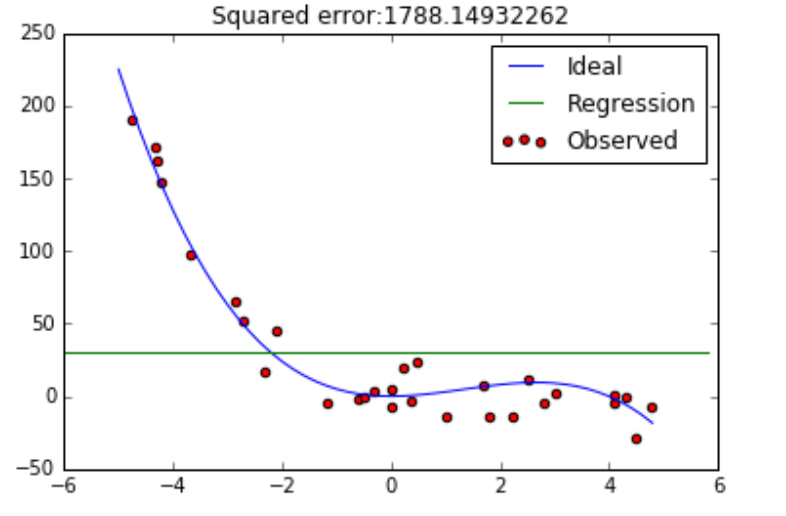
We can clearly see that this function doesn't provide a good solution. It's a so called High bias - low variance solution - the parameters for different instances are alomst the same - hence low variance. The solution is very biased towards some function thus high bias.
Overfitting happens with to complex models. Let's try extracting features with
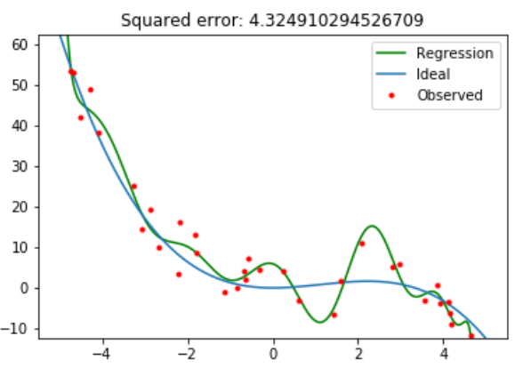
The solution does extremely well on this particular dataset, but given another instance of the same problem it will perform worse than lower-complexity models. We say that this model doesn't generalize well.
We call this low bias - high variance solution - the parameters for different instances are very different. The solution is very unstable.
where:
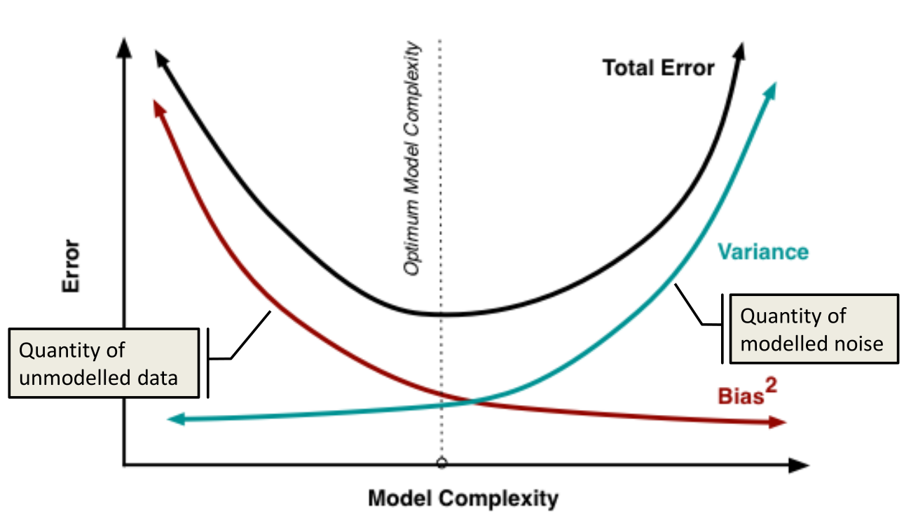
In the regression above we where able to choose to complexity of the model. Generally in ML this doesn't hold.
To tackle the problem of over/under fitting we are going to take a very complex model and control it's regularity - the magnitude of weights.
It's based on an observation that in as model is becoming more and more overfitted the magnitude of
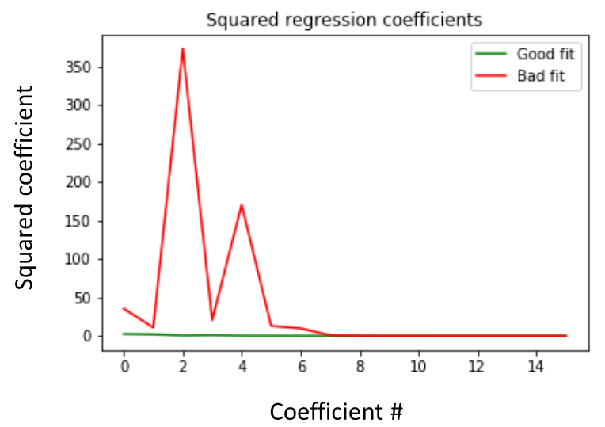
We perform regularization by penalising
Regularization coefficient is a hyper-parameter: we basically try different values and see what works best.
Regularizing with
Lasso is another regularization term
Recently we discovered that:
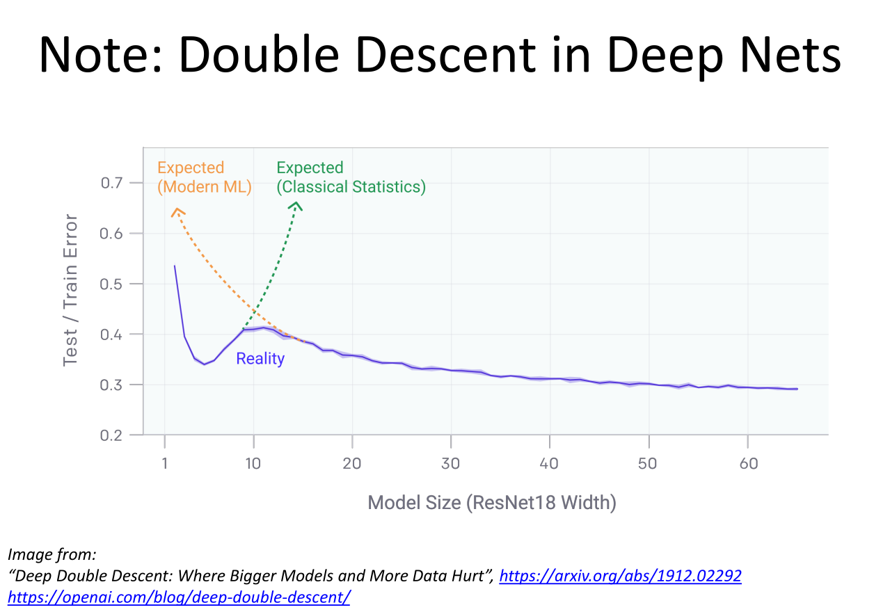
Beyond this point I haven't yet restructured the notes, they may contain errors and they are just a set of loose sentences written during the lecture.
HELP WANTED
I want to focus on notes for M4 for now so if somebody could help me structure and rewrite the notes below - it would be great. Feel free to msg me, open an issue or a pull request.
The whole thing till now was to try to estimate values for parameters.
Recap: the bayes rule states
Let's take a 1D dataset
Suppose that the underlying distirbution is a Gaussian. We want to estimate the parameters of the Gaussian
The thing that we are actually trying to do is to find
In order to maximize this product we take a log of it. (Maximum Log-likelihood). Log is monotonic, and now we maximize over a sum which is easier:
One way to view parameter fitting is selecting such a distribution that our dataset of samples is most probable
MSE is a consequence of Gaussian noise in the problem we r trying to model.
Logisitic cost works because of Bernoulli noise.
If we have some prior of what our weights should be we can leverage that via the Bayesian approach.
Let's assume that we have intuition that the parameters should be around 0
This leads us to the cost function that is using regularization.
Given a training set
This leads to the high-bias - low-variance balance.
Softmax is weight-combined sigmoid for many outputs.
https://www.internalpointers.com/post/cost-function-logistic-regression